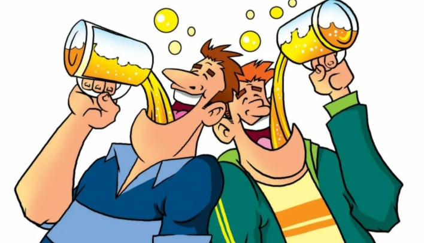
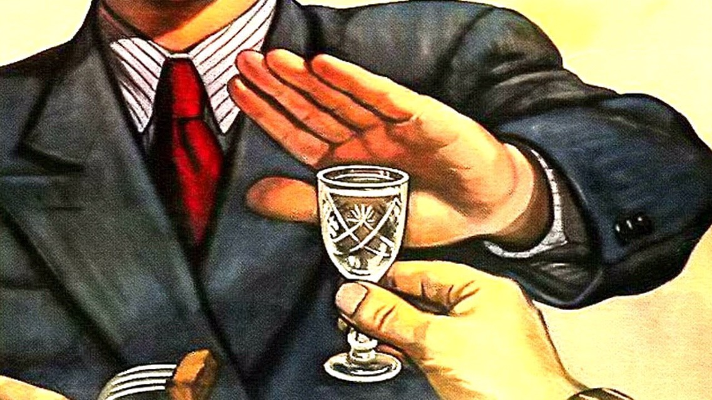

Как бросить пить ... Стадии алкоголизма.


Алкоголизм как прогрессирующее заболевание при своем естественном течении протекает в три последовательно сменяющих друг друга стадии. Переход от одной стадии к другой происходит плавно и незаметно. Это заболевание никогда не начинается внезапно. Неожиданно можно заболеть гриппом, желтухой, стенокардией, язвенной болезнью, аппендицитом, гонореей, дизентерией и много еще чем, но только не алкоголизмом. Первой стадии алкоголизма обязательно предшествует соблазнительный этап регулярного «культурного» пития, имеющий различную продолжительность, чаще в диапазоне от 1 года до 10 лет. Предрасположенные к алкоголизму люди проходят этот этап очень быстро, порой всего за несколько месяцев, далее наступает период малокультурного пития, что, по сути, означает переход в первую стадию алкоголизма. Поэтому я скептически отношусь к популярной концепции «культурного» пития. Это не выход из положения. Все алкоголики когда-то начинали культурно. Каждый человек, систематически употребляющий «культурно», рискует стать алкоголиком.
Остановить эту болезнь может только полная и окончательная трезвость. Но даже в случае очень редких и кратковременных срывов, например при одном эпизоде в несколько лет, болезнь будет неуклонно прогрессировать. Каждый, даже очень редкий и непродолжительный срыв не просто отбрасывает человека назад, а утяжеляет алкогольную зависимость, все туже затягивая узел проблем.
Первая стадия
Человек увлекается спиртным, но пить не умеет. Испытывая влечение к алкоголю, пьет не к месту и не знает меры. В состоянии опьянения способен наломать дров. Мы называем это утратой ситуационного и количественного контроля. Самочувствие на следующий день удовлетворительное, потребности в опохмелении пока нет. Появляются амнезии. Это еще не профессионал, но уже любитель высокого разряда. На этой стадии пить, как правило, не бросают, так как здоровья пока хватает. Первая стадия продолжается несколько лет, переход во вторую почти неотвратим.
Вторая стадия
К симптомам первой стадии присоединяется основной признак алкоголизма — абстинентный синдром. В не очень тяжелых случаях алкоголик способен терпеть «отходняк» до вечера и поправляет здоровье только после работы. Следующий этап зависимости наступает, когда до вечера алкоголик дотерпеть уже не может и опохмеляется в обеденный перерыв. В дальнейшем и до обеда терпеть больше нет сил, и опохмеление происходит с утра, причем со временем все раньше и раньше. Опохмеление ранним утром или еще ночью указывает на переход алкоголизма в запойную стадию. Неизбежны проблемы в семье, на работе (если ни то, ни другое еще не потеряно). Жизнь идет под откос, становится неконтролируемой, но признаться в этом самому себе страшно. Алкоголь занимает основное место в сознании, без спиртного жизнь кажется бессмысленной. Семья, дети, работа и все остальное уходят на второй план. Одни пьют почти постоянно, другие — с перерывами, но в обоих случаях болезнь прогрессирует, так как остановить естественное течение алкоголизма, повторяю, может только окончательная трезвость. На этой стадии часто бросают пить или делают попытки бросить, потому что наступает усталость и здоровье уже не то.
Третья стадия
Закономерный финал многолетнего злоупотребления алкоголем. Стадия деградации и расплаты за попустительство. Тяжелый абстинентный синдром, запои, алкогольное поражение печени и других органов, импотенция, эпилептические припадки, алкогольные психозы, расстройства памяти, энцефалопатия, полиневриты, слабоумие, высокая смертность. Это не любитель, тем более не профессионал, это развалина. Не только лучшие годы безвозвратно потеряны, но, пожалуй, и вся жизнь. Как ни покажется странным, но даже в этой стадии иногда бросают пить, обычно в весьма почтенном возрасте и слишком поздно для того, чтобы успеть как следует насладиться нормальной жизнью.
Всего несколько лет назад в международной классификации болезней девятого пересмотра существовала любопытная диагностическая категория — бытовое пьянство. Что это такое — непонятно. Это как бы пьяница, но еще не алкоголик. Термин неудачный и лишний. Между пьяницей и алкоголиком нет никакой принципиальной разницы, любой пьяница, без сомнения, является алкоголиком. Термином «бытовое пьянство» мы даем скорее социальную, нежели медицинскую оценку человеку. Совершенно справедливо диагноз «бытовое пьянство» был исключен из современной международной классификации болезней десятого пересмотра. Пьяниц в природе больше нет, остались только алкоголики. Термин «алкоголизм» теперь постепенно вытесняется более щадящим и благозвучным словом «зависимость».
Надо сказать, что как бы сами пьющие люди, их родственники или врачи ни назвали тот или иной случай, допустим, эпизодическим злоупотреблением, пьянством, распущенностью, алкоголизмом или зависимостью, — это ничего не меняет. Дело не в терминах. Важно осознать, что проблема существует, и ее надо каким-то образом решать.
Помимо собственно алкогольной болезни, которая лечится исключительно длительной трезвостью и ничем другим, алкоголь абсолютно противопоказан также и здоровым лицам, не страдающим пристрастием к «зеленому змию», но у кого индивидуальная реакция на спиртное непредсказуема. Некоторые люди уже от небольших доз алкоголя становятся буйными, агрессивными и даже невменяемыми. Если у человека не сохраняется никаких воспоминаний о кратковременном, продолжающемся обычно несколько часов помешательстве, то такие состояния квалифицируются как патологическое опьянение. В силу немотивированной агрессивности и измененного сознания лица в состоянии патологического опьянения склонны к противоправным действиям. С такими ситуациями часто сталкиваются судебные психиатры, когда решают вопрос о вменяемости лица в момент совершения правонарушения. От обычного опьянения с расторможенностью и беспамятством вследствие приема лошадиных доз спиртного, патологическое опьянение отличается тем, что вызывается малым количеством алкоголя. Причины возникновения патологического опьянения неизвестны. Однако, если это случилось хотя бы однажды, нечто подобное может повториться в любую выпивку, но предсказать заранее это невозможно. Поэтому единственный способ избежать опасного для всех присутствующих неконтролируемого патологического опьянения — всегда оставаться трезвым.
В других случаях сознание формально не нарушается, но добропорядочный до того человек становится после нескольких рюмок невыносимым: пристает к окружающим с глупостями, несет ахинею, его тянет на подвиги, он стремится сесть за руль, вдавив педаль газа до упора, уговаривает присутствующих искупаться в «водоеме» типа лужи, пытается нанести самоповреждения, становится злобным или, наоборот, плаксивым и т. д. Все эти проявления встречаются и у алкоголиков. Отличие состоит в том, что здоровые лица после протрезвления испытывают чувство неловкости и стыда, а у алкоголиков следует продолжение. Учитывая явную тенденцию к повторению описываемых форм опьянения, для того чтобы не приходилось краснеть, нужно забыть о спиртном. Это лучшее решение проблемы.